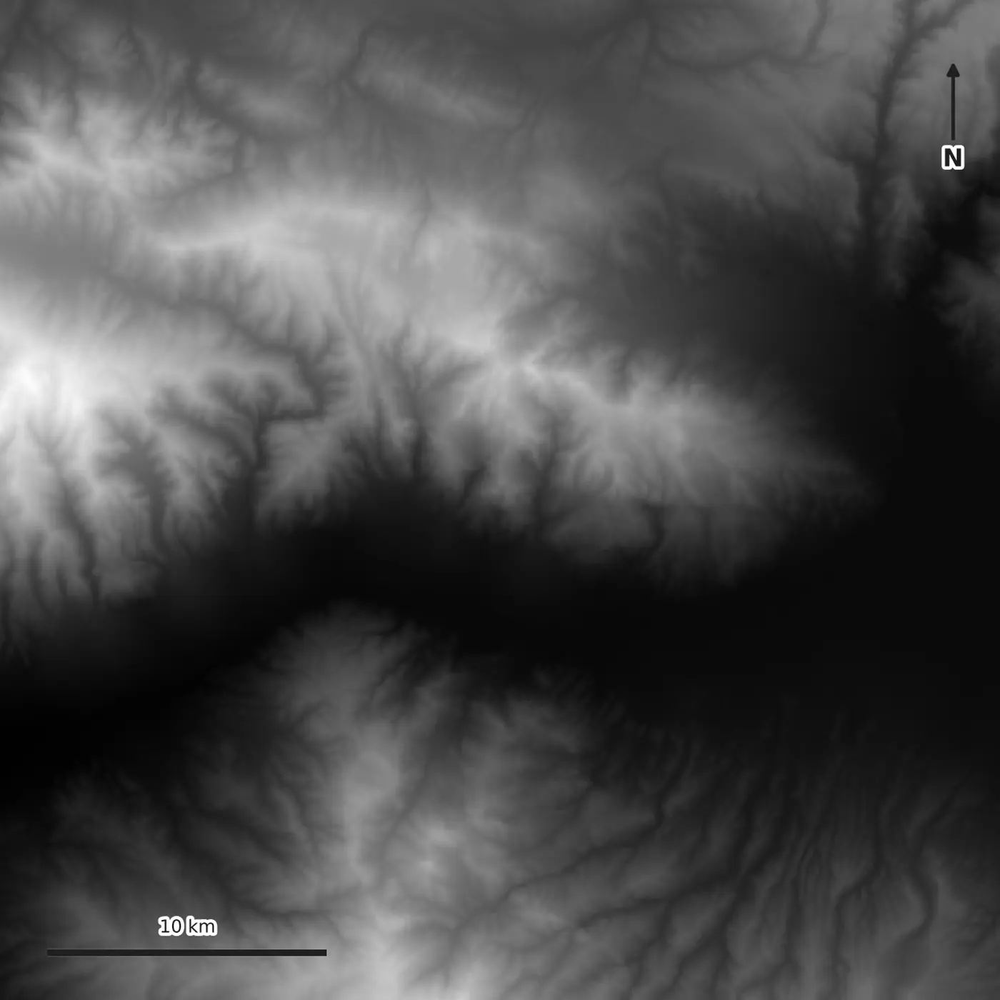
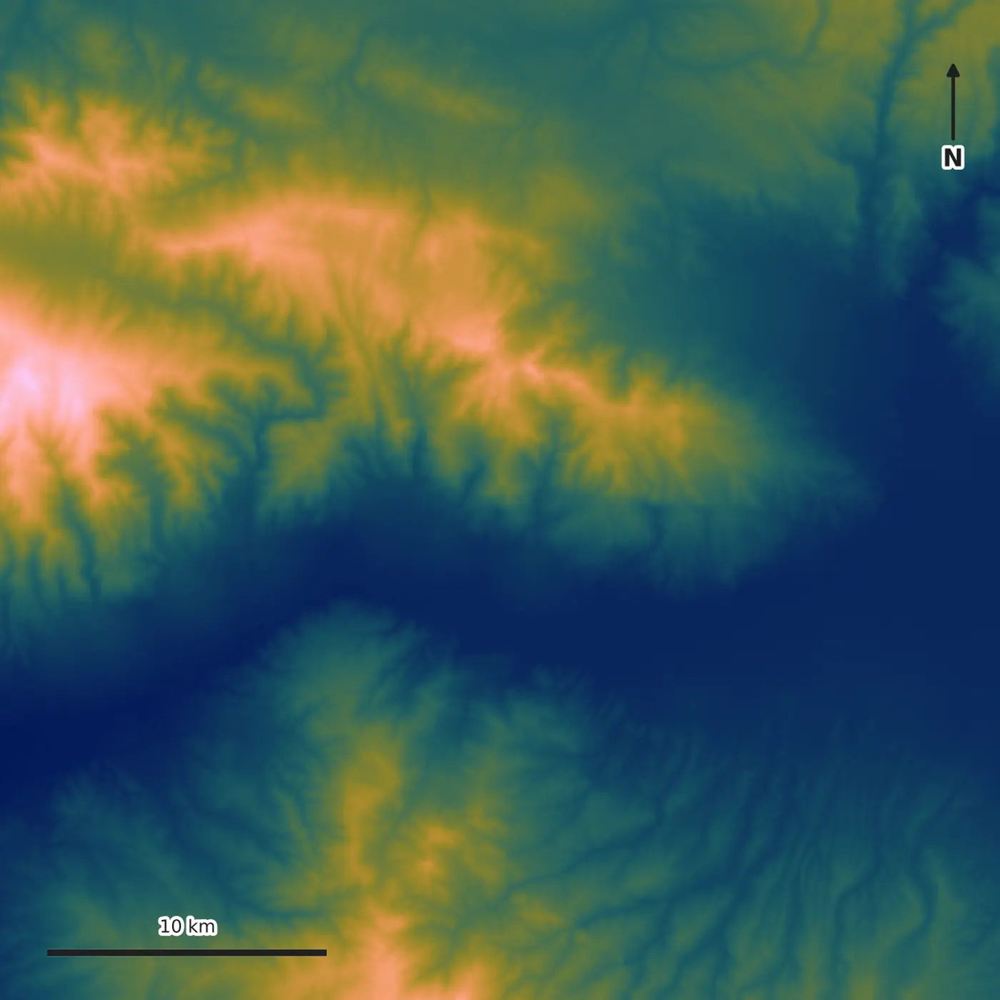
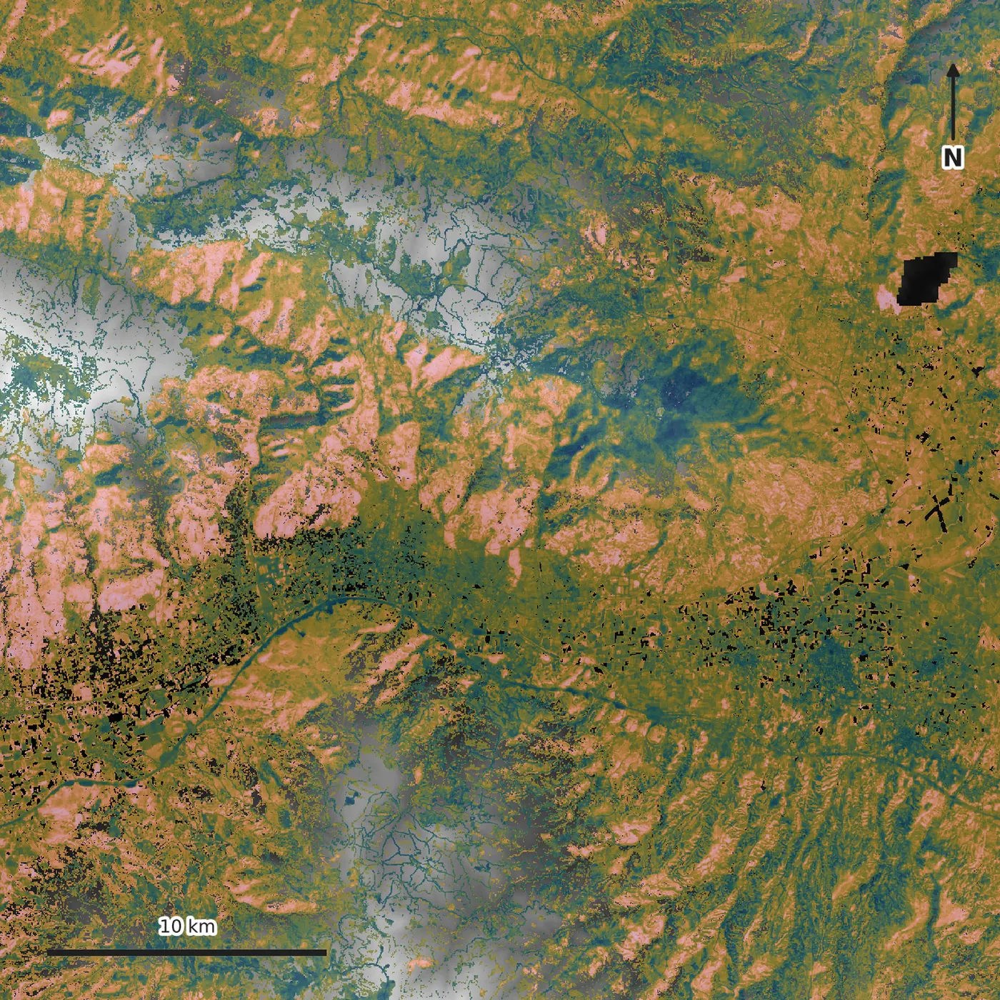

Earth data. Evidence. Priority.
Know where to look next.
OrbGSS turns Earth observation and geoscience data into evidence-backed spatial priorities that help teams decide where to investigate next.
Crater Lake, Oregon, USA 42.9443° N, 122.1353° W
Observe
Every OrbGSS analysis starts from one area of interest. The Kızıldere pilot AOI is a 36 × 36 km frame on a fixed 30 m grid, and every layer that follows is registered to exactly this ground.
Source and AOI context only — not validation evidence.

Terrain
Elevation gives the area its physical shape. NASADEM terrain is carried as display context, so every later signal can be read against real relief.
Context and display only. Terrain is not a scored predictor and carries no universal geothermal-favourability direction.

Evidence
Three accepted remote-sensing layers describe the same ground: one Landsat thermal anomaly and two Sentinel-2 spectral alteration proxies. Switch between them to see what each one contributes.
Evidence layers only — candidate and unvalidated. THM-01 is thermal evidence, not geothermal probability, reserve or resource, discovery or drilling-success evidence. ALT-01 and ALT-02 are broad spectral alteration proxies, never mineral or kaolinite identification, and not proof of hydrothermal alteration.
Structure
Structural and geological context would sharpen interpretation here. For this baseline OrbGSS has no public-safe fault or lithology layer, so the page shows the gap rather than filling it.
Structure and geology are optional support and score-invariant. Their absence does not change the remote-sensing priority baseline.
Data gap
No fault or lithology layer is published for this area. Nothing is drawn here on purpose: an invented structural line would look like evidence and would not be.
Priority
The thermal and alteration evidence is integrated into one within-AOI ranking surface, 0 to 100, so a team can order where to look first.
AOI-relative experimental screening only. Not probability, reserve or resource estimation, discovery likelihood, drilling-success likelihood, Full Prospectivity, or a score calibrated across areas.
Geothermal
Kızıldere is the first geothermal application of that baseline: the priority surface over NASADEM relief, in an active pilot area in Denizli, Türkiye.
First-application proof, not field validation, discovery, reserve or resource, drilling-target or drilling-success proof.

Pilot
Geothermal first.
Geothermal exploration is where OrbGSS is applied first. Mineral exploration and environmental & land intelligence follow the same evidence-to-priority workflow and are expansion directions, not finished products.
-
01
Geothermal Exploration
Active · First applicationEvidence-backed prioritization of geothermal exploration areas.
-
02
Mineral Exploration
Expansion directionThe same workflow extended to mineral exploration targets.
-
03
Environmental & Land Intelligence
Expansion directionLand and environmental change read as spatial evidence.
Company
OrbGSS — Orbital Geo-Spatial Solutions
OrbGSS is a geospatial-intelligence platform built by VirgaSoft. It exists to make exploration and land decisions evidence-based, traceable and easier to prioritize.
Built by VirgaSoft
How we work
- Traceable provenance Every output can be followed back to its source data.
- Explicit data gaps Missing or weak inputs are shown, not hidden.
- Evidence-based outputs Priorities are derived from mapped evidence, with the reasoning attached.
- Decision support, not replacement OrbGSS helps decide where to investigate. Field investigation remains necessary.
Contact
For pilot, partnership and technical conversations.